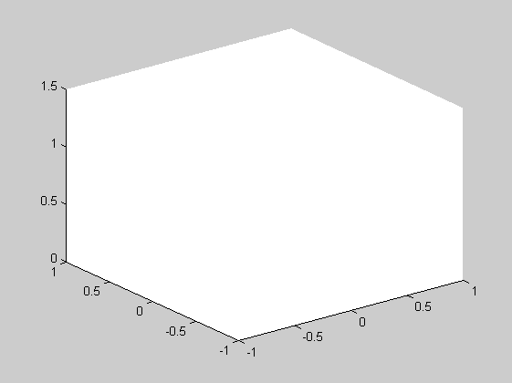
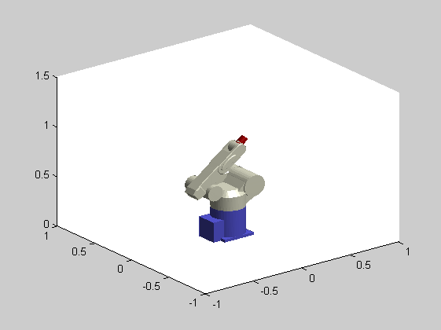
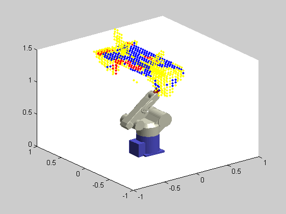
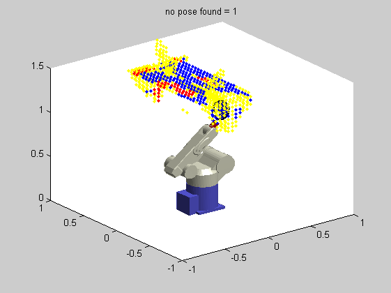

Pose Selection To Classify Unknown - Implementation Ver
Description: This function is used to identiy areas which have unknown classification and attempt to look at them in such a way that we can do a classification function poseclassunknown_Imp()
Contents
Setup and Variables
close all global r Q PointData RangeData IntensityData figure(1) % plot_planes(plane,mew); axis([-1,1,-1,1,0,1.5]); % axis equal camlight
Load data or classify a scan
NOhandleOPTIONS.useRealRobot=false; NOhandleOPTIONS.show_robot=true; NOhandleOPTIONS.animate_move=false; NOhandleOPTIONS.remv_unkn_in_mv=false; %take one scan from an initial pose newQ=[0,-88*pi/180,140*pi/180,0,0*pi/180,0]; %move to the next place movetonewQ(0,rad2deg(newQ),[],NOhandleOPTIONS); Q=newQ; % and do a scan to classify if NOhandleOPTIONS.useRealRobot try use_real_robot_SCAN(90); catch; display('Couldnt scan');end end try [ClassifiedData] = Block_Classifier(PointData, IntensityData, RangeData); catch; display('Couldnt classify');end
Handles not passed in so not updating the GUI Already at destination Couldnt classify
More Vars
class_cubesize=0.045; %minimum number of classifications in voxel to make it valid minclassifications=60; % minimmum majority classification to make it useful classfierthreshhold=1.5; % the classifier reterns a classification of this number is unknown unknownclass=8; %size of the surfaces which is 1/2 of 20' scan at ideal distance 0.5*tan(20*pi/180) mew=0.1; % This is how many sets of data we will classify numofintplanes=1; %how many solutions and failures solsfound=0; noposefound=0; %optimisataion variables global classunkn_optimise classunkn_optimise.minSurfToEF=0.3; classunkn_optimise.maxSurfToEF=0.8; classunkn_optimise.distAwayfromTarget=0.45; classunkn_optimise.maxAngle=30*pi/180; classunkn_optimise.iLimit=200; classunkn_optimise.stol=1e-5;
put classification data in one big matrix
some text to dwescribe
display('TEMP LOADING DATA');load GavData;ClassifiedData=ClassifiedDatawEdges; pointswithclass=zeros([size(PointData,1)*size(PointData,2),4]); for i=1:size(PointData,1); pointswithclass((i-1)*size(PointData,2)+1:i*size(PointData,2),:)=[squeeze(PointData(i,:,:)),ClassifiedData(i,:)']; end; %discreatise into grid class_ocgrid=[round(pointswithclass(:,1:3)/class_cubesize),pointswithclass(:,4)]; % hold on;plot3(class_ocgrid(:,1)*class_cubesize,class_ocgrid(:,2)*class_cubesize,class_ocgrid(:,3)*class_cubesize,'y.','markersize',2) % pnts=[-7,10,26;-9,3,30;-8,-13,27]; % pause % for i=1:3 % pnt=pnts(i,:); % text(pnt(1)*class_cubesize,pnt(2)*class_cubesize,pnt(3)*class_cubesize,num2str(i)); % figure;hist(class_ocgrid(find(class_ocgrid(:,1)==pnt(1) & class_ocgrid(:,2)==pnt(2) & class_ocgrid(:,3)==pnt(3)),4)) % pause % end ocgrid=unique(class_ocgrid(:,1:3),'rows'); ocgrid=[ocgrid,zeros([size(ocgrid,1),3])]; for i=1:size(ocgrid,1) tempdata=class_ocgrid(class_ocgrid(:,1)==ocgrid(i,1) & class_ocgrid(:,2)==ocgrid(i,2) & class_ocgrid(:,3)==ocgrid(i,3),4); metalnum=size(find(tempdata<=5),1); woodnum=size(find(tempdata>=6 & tempdata<=7),1); unknownnum=size(find(tempdata>=8),1); ocgrid(i,4)=ocgrid(i,4)+metalnum; ocgrid(i,5)=ocgrid(i,5)+woodnum; ocgrid(i,6)=ocgrid(i,6)+unknownnum; end % figure(2) sumofclass=ocgrid(:,4)+ocgrid(:,5); classifiedvoxels=find(sumofclass>=minclassifications & (ocgrid(:,4)./ocgrid(:,5)>classfierthreshhold | ocgrid(:,5)./ocgrid(:,4)>classfierthreshhold)); UNclassifiedvoxels=find(sumofclass<minclassifications | (ocgrid(:,4)./ocgrid(:,5)<=classfierthreshhold & ocgrid(:,5)./ocgrid(:,4)<=classfierthreshhold)); hold on;plot3(ocgrid(UNclassifiedvoxels,1)*class_cubesize,ocgrid(UNclassifiedvoxels,2)*class_cubesize,ocgrid(UNclassifiedvoxels,3)*class_cubesize,'y.'); %plot metal and wood voxels metalvoxels=ocgrid(classifiedvoxels(ocgrid(classifiedvoxels,4)>ocgrid(classifiedvoxels,5)),1:3); plot3(metalvoxels(:,1)*class_cubesize,metalvoxels(:,2)*class_cubesize,metalvoxels(:,3)*class_cubesize,'r.'); woodvoxels=ocgrid(classifiedvoxels(ocgrid(classifiedvoxels,4)<ocgrid(classifiedvoxels,5)),1:3); plot3(woodvoxels(:,1)*class_cubesize,woodvoxels(:,2)*class_cubesize,woodvoxels(:,3)*class_cubesize,'b.'); %find unknown points % unknownindex=find(pointswithclass(:,4)==unknownclass);
TEMP LOADING DATA
plot and make surfaces out of these
plot3(pointswithclass(unknownindex,1),pointswithclass(unknownindex,2),pointswithclass(unknownindex,3),'r.')
surface_making_simple(ocgrid(UNclassifiedvoxels,:)*class_cubesize,mew)
global plane
Find the planes covering most unknown points
these are desirable places to look
sizemat=zeros([length(plane),1]); for i=1:length(plane) sizemat(i)=size(plane(i).points,1); end % order these [nothing,index]=sort(sizemat,'descend'); %make sure we have at max, the specified numofintplanes if length(index)<numofintplanes numofintplanes=index; end
Go through the number of planese we are interested in
for i=1:numofintplanes % plot plane and points try for j=1:length(planeplotHa); delete(planeplotHa(j));end; end planeplotHa=plot_planes(plane(index(i)),mew); hold on; planeplotHa(2)=plot3(plane(index(i)).home_point(1),plane(index(i)).home_point(2),plane(index(i)).home_point(3),'b*'); planeplotHa(3)=plot3([plane(index(i)).home_point(1),plane(index(i)).home_point(1)+plane(index(i)).normal_by_eigenval(1)/10],... [plane(index(i)).home_point(2),plane(index(i)).home_point(2)+plane(index(i)).normal_by_eigenval(2)/10],... [plane(index(i)).home_point(3),plane(index(i)).home_point(3)+plane(index(i)).normal_by_eigenval(3)/10],'b'); pt=plane(index(i)).home_point; plane_equ=plane(index(i)).equ; try [newQ,solutionvalid,dist_val,targetdist]=classunk_posesel(pt, plane_equ, Q); if solutionvalid solsfound=solsfound+1; display(['Solution found = ',num2str(solsfound)]); title(['Solution found = ',num2str(solsfound)]); %make sure vector is correct newQ=newQ(:)'; %move to the next place movetonewQ(0,rad2deg(newQ),[],NOhandleOPTIONS); % and do a scan to classify if NOhandleOPTIONS.useRealRobot %try and move through a complete scan so we have to make newQ standard newQ=[newQ(1:4)',-15*pi/180,0]; movetonewQ(0,rad2deg(newQ),[],NOhandleOPTIONS); try use_real_robot_SCAN(90); catch; display('Could do anything');end end % try [ClassifiedData] = Block_Classifier(PointData, IntensityData, RangeData);end Q=newQ; else noposefound=noposefound+1; display(['no pose found = ', num2str(noposefound)]); title(['no pose found = ', num2str(noposefound)]); end catch noposefound=noposefound+1; display('Some error'); title(['Some error:no pose found = ', num2str(noposefound)]); end end
End Effector is TOO FAR AWAY from aimed at point close enough without moving 4 or 5 The actual INTERSECTION point shot is TOO FAR AWAY from aimed at point no pose found = 1